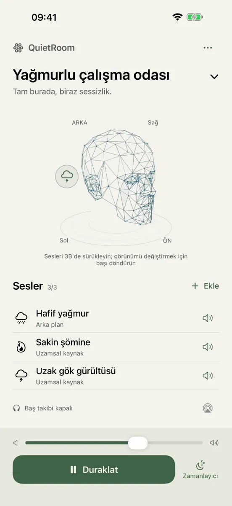
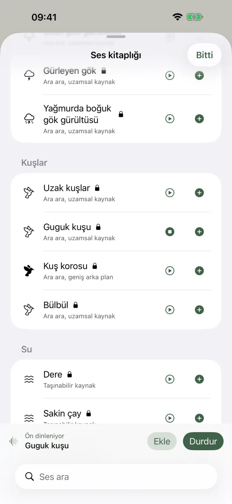
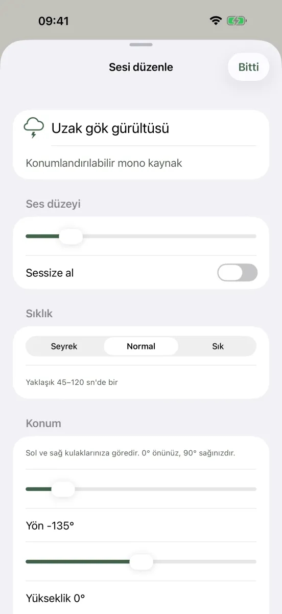
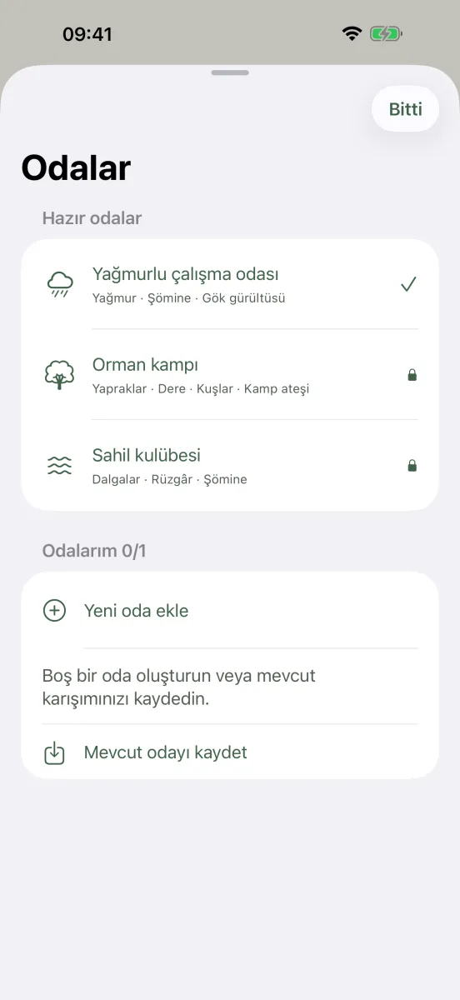

Gerçek alanda sesler
Her sesi 3B dinleyicinin çevresinde sürükleyin: sola veya sağa, öne veya arkaya, yukarı veya aşağı. Ya da yönü, yüksekliği ve mesafeyi tam olarak ayarlayın. Geniş arka planlar çevrenizde sabit kalır.
iPhone için · iOS 18 veya üstü
QuietRoom doğa seslerini çevrenize yerleştirir: solunuzdaki pencerede yağmur, önünüzde bir dere, hemen arkanızda bir ateş. Kulaklığınızı takın, dinlemeye başlayın ve odayı içinize sinene dek şekillendirin.

Her sesi 3B dinleyicinin çevresinde sürükleyin: sola veya sağa, öne veya arkaya, yukarı veya aşağı. Ya da yönü, yüksekliği ve mesafeyi tam olarak ayarlayın. Geniş arka planlar çevrenizde sabit kalır.
Yağmur, gök gürültüsü, kuşlar, dereler, dalgalar, rüzgâr, böcekler, ayak sesleri ve ateş. Kayıtlar doğal olarak değiştiği için oda hiçbir zaman kısa bir döngü gibi gelmez. Pro sesler dahil her sesi eklemeden önce ön dinleyebilirsiniz.
Gök gürültüsü, kuş sesleri, damlalar ve ayak sesleri zaman zaman duyulur. Her biri için Seyrek, Normal veya Sık seçin. Ayak sesleri sürekli yürüyüş olarak da çalabilir.
Yağmurlu çalışma odası, Orman kampı veya Sahil kulübesiyle başlayın ya da boş bir odayla işe koyulun. Değişiklikler otomatik kaydedilir; kayıtlı odaları istediğiniz zaman yeniden adlandırın, çoğaltın veya değiştirin.
Uyumlu kulaklıklarla başınızı çevirdiğinizde uzamsal sesler yerinde kalır. Normal kulaklıklar yine de sabit uzamsal ses sunar.
Hesap yok, reklam yok, analiz yok. Sesler uygulamayla birlikte gelir; dinleme, düzenleme ve kaydetme bağlantı olmadan çalışır. Uyku zamanlayıcısı sesi yavaşça kısar.



Tek seferlik satın alma · abonelik yok
Fiyat, bölgenizdeki App Store'da gösterilir.